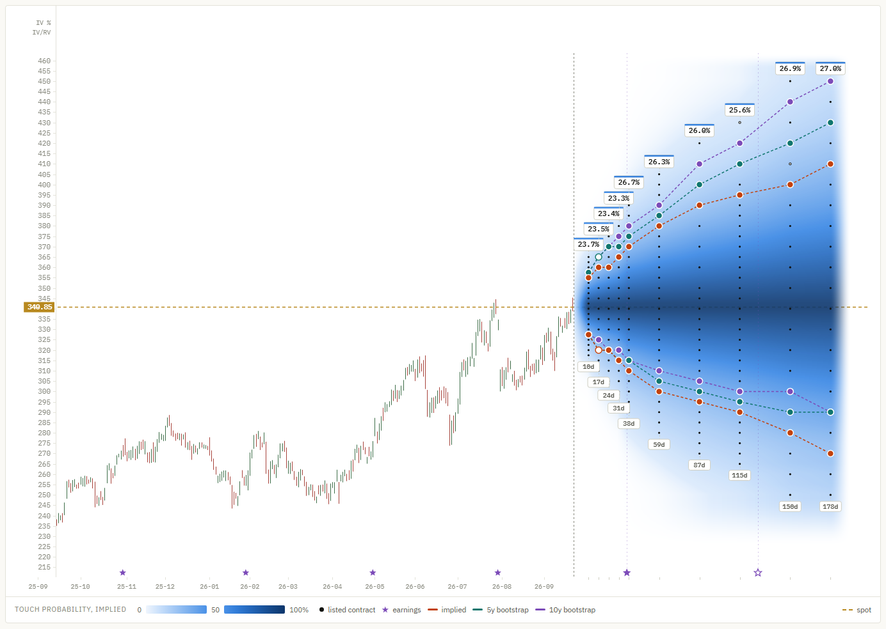
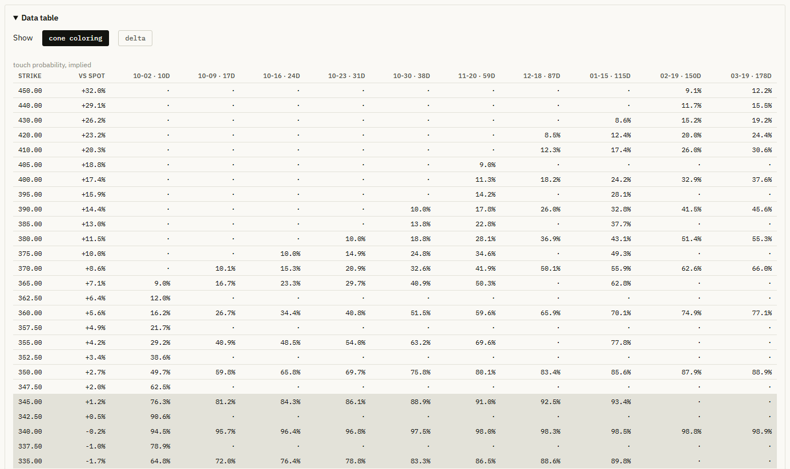

OptionsCone manual
Everything the app shows and every control, in the order you meet them.
Install
OptionsCone is a desktop app for Windows 10 and 11.
- Download
OptionsCone-Setup.exe. - Run it. It installs OptionsCone in a few seconds and can put a shortcut on your desktop.
- The file is not code-signed yet, so Windows SmartScreen may say it protected your PC. Click More info, then Run anyway. Windows remembers the choice.
New versions install themselves: when one is out, OptionsCone shows an Update button at the top, and one click installs it. Your tickers and settings are kept. What's new lists every version.
The first start takes a few seconds longer while the program unpacks itself. It runs on Windows 10 and 11 and uses the Edge WebView2 component that both include.
Each release lists a SHA-256 checksum. To check your download, open PowerShell in the download folder and run Get-FileHash OptionsCone.exe; the result should match.
Download a ticker
Use the bar at the top of the window to download data.
| Control | What it does |
|---|---|
| Ticker box | Type one or more US tickers, separated by spaces or commas, for example AAPL MSFT. |
| download | Fetches the option chain and prices every contract. In Pro it also computes the realized odds and the Pro maps. Enter in the ticker box does the same. |
| weeklies | Includes weekly expiries as well as the standard monthly ones. More columns, longer download. |
| data folder | Opens the folder where the archive and the chart are stored. |
A progress bar and a status line show what is happening. The first download of a ticker takes a minute or two; later ones are similar, because every download is a complete new chain. When it finishes, the chart reloads on that ticker.
Download during US trading hours
Option quotes are only meaningful while the US market is open: 9:30 to 16:00 New York time, usually 15:30 to 22:00 in Central Europe. The app handles this in two ways:
- An earlier download exists from trading hours: the chart keeps showing that one. The new download is archived but not used, and the line next to the ticker says so, for example
newer download from 2026-09-25 23:30 not used (outside trading hours). - No download from trading hours exists yet, for example when a new ticker is first downloaded in the evening: the chart is shown with a red No data from trading hours yet note above it, and the status line turns red. Download the ticker again during trading hours and the note disappears.
Read the chart

Candles and spot
Up to ten years of daily or weekly candles. The dashed gold line is the current price (spot), labeled on the price axis. Stars on the date axis mark earnings: filled where the date is confirmed, hollow where it is projected from the reporting cycle, smaller for past reports.
The cone
To the right of today, each column of dots is one expiry, labeled with its days to expiry at the bottom. Each dot is a listed contract: calls above spot, puts below, so every contract shown is out of the money. A hollow dot marks a contract whose quote failed the quality checks; its values are estimated.
The color is the implied probability of touching that strike before that expiry, from pale (unlikely) to dark (likely). The legend under the chart gives the scale.
Contour lines
For every expiry, each model marks the listed strike whose probability is closest to your target, once above and once below spot, and joins the marks into a line. A filled marker is within 5 percentage points of the target; a hollow one is the nearest strike available but further off. Where no listed strike comes within 25 points, that expiry has no marker.
The implied line comes from option prices, the adaptive Pro and 10y Pro lines from the stock's own moves. When all three are shown, the implied line is drawn on top.
Expiry badges
The badge above each expiry shows that expiry's overall implied volatility. When there is room (you may need to zoom in), a second number shows the ratio of that volatility to realized volatility, for example x1.15. It turns orange from 1.30: the market is charging a lot more than the stock has recently moved, often ahead of earnings.
The figures above the chart
Spot price, the date of the data, the number of contracts, realized volatility (the stock's recent actual volatility) and how many contracts passed the quality checks.
Controls
| Control | What it does |
|---|---|
| Ticker | Switches between the tickers you hold. The line next to it shows when the data was captured and how many downloads are archived. refresh downloads a fresh chain for the ticker shown. |
| Bars: daily, weekly | Candle interval. |
| Zoom: reset | Returns to the opening view. The label shows fit there, otherwise the zoom factor. |
| Track probability: down, up | The target probability for the contour lines below and above spot, in steps of 5%. |
| linked | Moves both sides together. |
| Contour: touch, expire | Whether the lines track the probability of touching the strike before expiry, or of finishing beyond it at expiry. |
| Models: implied, adaptive, 10y | Show or hide each model's line. adaptive and 10y are part of Pro. |
| Cone: probability, time value/day, IV, open int., volume, spread, implied vs realized, expected value, avg. risk / premium, tail risk / premium, GEX | What the cone is colored by. Clicking the active button again hides the cone, so the contour lines can be read on their own. The legend under the chart shows the range of values. time value/day shows a seller's average daily income per contract. volume shows the contracts traded in the session of the download. For spread, darker means tighter. The maps from implied vs realized on are part of Pro. implied vs realized compares the touch probability from option prices with the realized odds of the adaptive model: blue where the options price in more than the stock itself supports (a potential opportunity for sellers), red where less. expected value shows what a short option is worth at expiration, as a share of its premium: blue where selling it comes out ahead on average, red where it does not. avg. risk / premium and tail risk / premium show what a short option can cost at expiration, on average and in the bad cases, in multiples of the premium: the darker the red, the more it can cost. GEX shows where dealer hedging tends to slow moves down (blue) or speed them up (red). |
| dots | Hides the contract dots to read the color on its own. The tooltip keeps working. |
| fullscreen | Fills the window with the chart and takes the controls along. |
| Draw: off, trend, horizontal, clear | Drawing tools. Trend lines are dragged from one point to another; a horizontal line is placed with one click. Drawings stay pinned to price and date when you zoom or scroll. |
| EMA 1, 2 | Two exponential moving averages of the close. The number next to each is the period in trading days; on weekly bars it is converted to weeks. The settings are remembered. |
Mouse and keyboard
| Input | Action |
|---|---|
| Click a dot | Select that contract: it is marked and its tooltip stays open while you switch color modes |
| Click it again, click empty space, or Esc | Clear the selection |
| Drag left or right | Scroll through time |
| Drag up or down | Slide the price range, to bring a part of the cone into view |
| Ctrl or Shift + wheel | Zoom in and out around the pointer |
| Wheel over a probability box | Change that target probability |
| ↑ ↓ | Change the downside target (and the upside too while linked). With a contract selected: move to the next strike up or down |
| ← → | With a contract selected: move to the previous or next expiry, at the nearest strike |
| F | Enter or leave fullscreen (Esc also leaves, after clearing a selection) |
| T H V | Trend line, horizontal line, drawing off |
| Ctrl+Z or Backspace | Remove the last drawing |
Tooltip
Hover a dot to see that contract: strike, distance from spot, expiry, days to expiry, delta and gamma. Below that come the numbers for the current cone coloring:
- probability: the contract's implied volatility, and touch and expire from option prices and, in Pro, from the realized odds with their 80% range, plus the mid price
- IV: implied volatility, and whether it is a call or a put
- open int.: open interest and volume
- volume: volume and open interest
- spread: bid, ask, mid, and the spread in dollars and as a share of the mid
- time value/day: the mid, the days left and the average theta per day for one contract
- implied vs realized: the touch probability from option prices, adaptive and 10y, and the difference to the adaptive model in percentage points
- expected value: bid, mid and ask against what the option is worth at expiration on average, the expected value per share and as a share of the premium, and the minimum premium for a positive expected value, with safety margins
- avg. risk / premium: the expected loss per share and in multiples of the premium, the chance of a loss and the average loss
- tail risk / premium: the loss in the bad cases, in multiples of the premium, and the chance of a loss
- GEX: the gamma exposure of the calls, the puts and both together, and for all expiries at that strike
A warning line appears if the quote was flagged by the checks. On the expected value and risk maps, a line marked ▲ says when a figure is only a rough guide, for example in unusually high volatility.
Comparing one contract across maps
Click a dot to select the contract. It gets a small square frame that stays visible on every color mode, and its tooltip stays open. With a contract selected, the arrow keys move the selection to the neighboring contracts. Switch through the color modes and the tooltip changes with them, so you can read one contract's probability, volatility, open interest, spread, time value and seller figures in a few clicks. Hovering another dot shows that one for a moment; the selected tooltip comes back when you move away. The selection follows the contract through zooming and scrolling and is kept per ticker.
Delta and gamma come from the same model as the implied volatility, so they can be compared with your broker's. Small differences come from the broker's own dividend and rate assumptions.
Data table

Open Data table below the chart. Strikes are rows and expiries are columns. cone coloring shows the same values the cone is colored by (in probability mode, the implied touch probability); delta shows each contract's delta, calls above spot and puts below. A dot means the expiry does not list that strike. The shaded rows are the strikes within 2% of spot.
Data quality and Methods
Data quality shows how many quotes passed the checks, broken down by moneyness, with the median spread and open interest in each band. The rate that matters is the one for out-of-the-money contracts, because those are the ones the probabilities come from.
Methods explains what the numbers in the app mean. The methods page covers the same.
Your data
Everything is stored in %LOCALAPPDATA%\OptionsCone, which data folder opens:
| Folder | Contents |
|---|---|
archive | Every option chain you have downloaded, with its time and market state. Option quotes cannot be downloaded again later, so this is the part worth backing up. |
data, charts | The prepared chart data and the chart page. Rebuilt from the archive when needed. |
logs | optionscone.log, useful when reporting a problem. |
To uninstall, delete OptionsCone.exe and this folder.
Updating
Download the new OptionsCone.exe and replace the old one. Your archive stays where it is. If the new version stores chart data differently, it rebuilds your tickers from the archive on its first start, without downloading anything.
Troubleshooting
The window stays empty
The app needs the Microsoft Edge WebView2 Runtime. It is part of Windows 10 and 11, but can be missing on stripped-down installations. Install it from Microsoft and start the app again.
A download fails
Check the ticker symbol and your internet connection. Yahoo Finance occasionally limits requests; waiting a few minutes usually helps. The status line and logs\optionscone.log give the reason.
The numbers look stale, or a red warning appears
The chart always uses the newest download taken during US trading hours, and the capture time next to the ticker tells you which one. A red No data from trading hours yet note means the ticker has not been downloaded during trading hours; see Download during US trading hours.
A contour line is missing on one side
An expire probability cannot exceed about 50% on either side of spot, so a higher expire target cannot be drawn. The app says so next to the model buttons.
Something else
Write to research@nikolai-alexander.com with the ticker, what you expected, and the end of the log file.